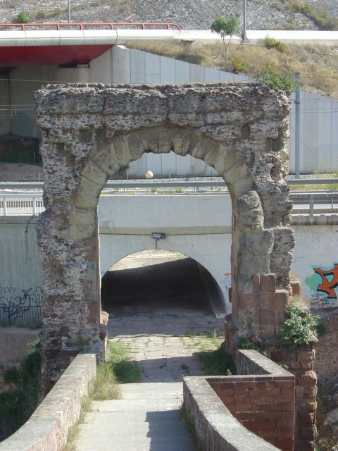
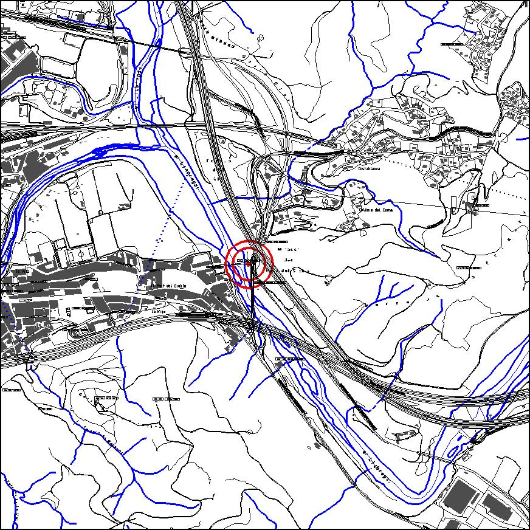

|  |  |
Nom de l’element: Arc romà
Clau d’identificació: B.04
Nucli o indret: Riu Llobregat.
UTM: X= 411.448, Y= 4.592.235, 40 m snm.
Règim del sòl: Sòl no urbanitzable.
1.1. Època de construcció i tipologia:
L’arc data d’època romana, del segle II dC. Al 1928 va patir una restauració i al 1933, es va dur a terme el desenterrament dels sòcols de l’arc per la construcció de la carretera. L’arc forma part del recorregut de la Via Augusta, juntament amb el Pont del Diable.
1.2. Estat de conservació:
Bo.
1.3. Ús actual:
Monument històric i cultural. Pas de vianants a través del Pont del Diable.
1.4. Accés:
Accés fàcil des de la carretera C-243 o bé des dels carrers de Martorell.
Monument d’època romana que compta amb un bon estat de conservació. D’altra banda, es tracta d’un dels elements més importants de la Via Augusta al seu pas pel Vallès Occidental, via que està en procés de recuperació.
3.1. Usos admesos:
3.2. Condicions d’ordenació:
Segons Pla Especial a redactar.
3.3. Accés
Accés des de la carretera C-243 o bé des dels carrers de Martorell.
BCIN (Bé Cultural d’Interès Nacional)
Aquest bé complirà allò descrit als art. 33, 34,35 i 36 de la Llei de Patrimoni Cultural, així com els deures fixats als art. 21 i 25.
Monument històric. Reial Ordre 08/05/1925, Gaseta 12/05/1925. (Número Registre BCIN: 89-MH, Número Registre BIC: R.I.51-0310)